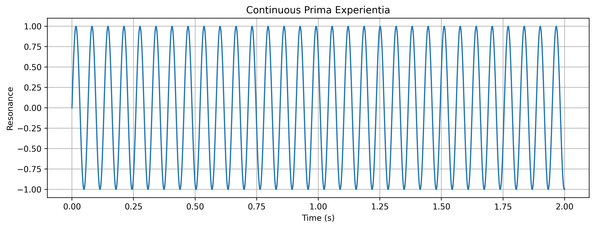
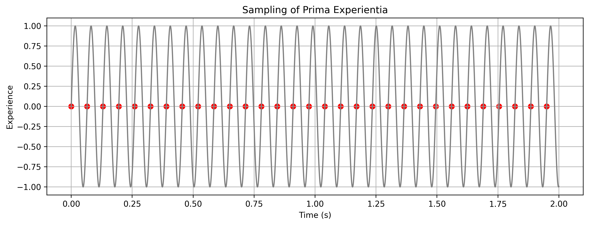
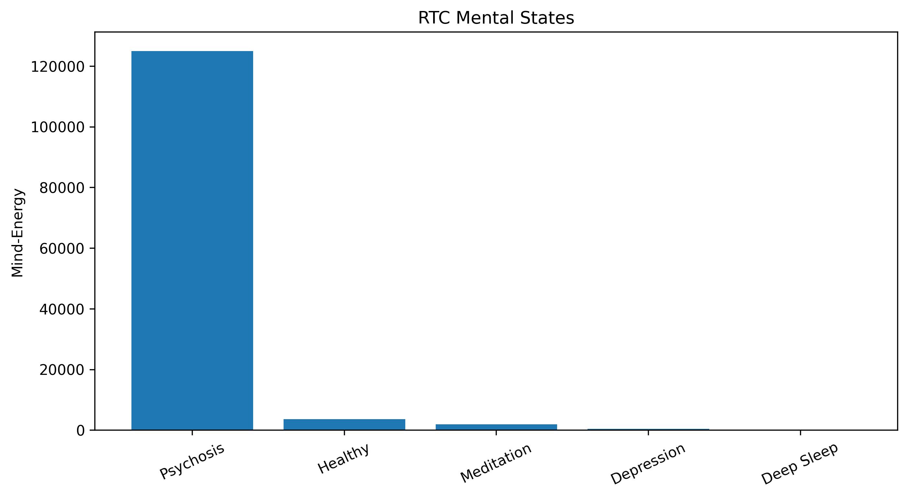

Show R/Python code
import numpy as np
pptq = 65 # milliseconds
T = pptq/1000
Em = 1/(T**3)
print("PPTQ:",pptq,"ms")
print("Mind-Energy =",Em)PPTQ: 65 ms
Mind-Energy = 3641.3290851160673Interactive Simulation of Prima Experientia and the Psychophysical Time Quantum
Edward F. Hillenaar
2 September 2026
The Resonance Theory of Consciousness (RTC) proposes that Prima Experientia is the ontological substrate of reality.
Observable perception is generated through a discrete psychophysical sampling process governed by the Psychophysical Time Quantum (PPTQ).
The relation between Mind-Energy and PPTQ is
E_m=\frac{1}{T^3}
where
T = PPTQ (seconds)
E_m = Mind-Energy.
The simulator below is implemented in Streamlit.
RTC assumes that resonance unfolds continuously.

Perception is assumed to arise through sampling of continuous experience.
sample_times=np.arange(0,2,T)
samples=np.sin(2*np.pi*sample_times/T)
plt.figure(figsize=(12,4))
plt.plot(time,signal,color="gray")
plt.scatter(sample_times,samples,
color="red",
s=40)
plt.xlabel("Time (s)")
plt.ylabel("Experience")
plt.title("Sampling of Prima Experientia")
plt.grid(True)
plt.show()

RTC proposes four ontological operators
M_{exp} = \alpha I + \beta C + \gamma R + \delta V
where
I = Inertia
C = Cohesion
R = Radiation
V = Vibration
These operators continuously generate Prima Experientia.
The integration of Quarto and Streamlit enables an interactive scientific publication in which theory, mathematical derivations, simulations and visualizations coexist in a single document.
---
title: "Resonance Theory of Consciousness"
subtitle: "Interactive Simulation of Prima Experientia and the Psychophysical Time Quantum"
author: "Edward F. Hillenaar"
date: last-modified
date-format: "D MMMM YYYY"
categories: [werkwijze, Quarto]
image: ../../assets/vibration.jpg
bibliography: references.bib
nocite: |
@*
format:
html:
toc: true
number-sections: true
theme: cosmo
css: styles.css
code-fold: true
code-summary: "Show R/Python code"
execute:
echo: true
warning: false
message: false
jupyter: python3
---
# Introduction
The Resonance Theory of Consciousness (RTC) proposes that **Prima Experientia** is the ontological substrate of reality.
Observable perception is generated through a discrete psychophysical sampling process governed by the **Psychophysical Time Quantum (PPTQ)**.
The relation between Mind-Energy and PPTQ is
$$E_m=\frac{1}{T^3}$$
where
- $T$ = PPTQ (seconds)
- $E_m$ = Mind-Energy.
# Interactive RTC Simulator
The simulator below is implemented in Streamlit.
```{=html}
<iframe
src="https://experientia-pptq.streamlit.app/?embed=true"
width="100%"
height="900"
style="border:none; overflow:hidden;">
</iframe>
```
# Mathematical Model
```{python}
import numpy as np
pptq = 65 # milliseconds
T = pptq/1000
Em = 1/(T**3)
print("PPTQ:",pptq,"ms")
print("Mind-Energy =",Em)
```
# Resonance Function
RTC assumes that resonance unfolds continuously.
```{python}
import numpy as np
import matplotlib.pyplot as plt
pptq=65
T=pptq/1000
time=np.linspace(0,2,3000)
signal=np.sin(2*np.pi*time/T)
plt.figure(figsize=(12,4))
plt.plot(time,signal)
plt.xlabel("Time (s)")
plt.ylabel("Resonance")
plt.title("Continuous Prima Experientia")
plt.grid(True)
plt.show()
```
# Constructed Temporality
Perception is assumed to arise through sampling of continuous experience.
```{python}
sample_times=np.arange(0,2,T)
samples=np.sin(2*np.pi*sample_times/T)
plt.figure(figsize=(12,4))
plt.plot(time,signal,color="gray")
plt.scatter(sample_times,samples,
color="red",
s=40)
plt.xlabel("Time (s)")
plt.ylabel("Experience")
plt.title("Sampling of Prima Experientia")
plt.grid(True)
plt.show()
```
# Mind-Energy Curve
```{python}
pptq=np.linspace(20,200,400)
T=pptq/1000
Em=1/(T**3)
plt.figure(figsize=(10,5))
plt.plot(pptq,Em)
plt.xlabel("PPTQ (ms)")
plt.ylabel("Mind-Energy")
plt.title("RTC Equation")
plt.grid(True)
plt.show()
```
# RTC State Space
```{python}
states=["Psychosis",
"Healthy",
"Meditation",
"Depression",
"Deep Sleep"]
pptq=[20,
65,
80,
130,
10000]
energy=1/((np.array(pptq)/1000)**3)
plt.figure(figsize=(10,5))
plt.bar(states,energy)
plt.ylabel("Mind-Energy")
plt.title("RTC Mental States")
plt.xticks(rotation=25)
plt.show()
```
# Ontological Operators
RTC proposes four ontological operators
$$M_{exp}
=
\alpha I
+
\beta C
+
\gamma R
+
\delta V$$
where
- **I** = Inertia
- **C** = Cohesion
- **R** = Radiation
- **V** = Vibration
These operators continuously generate Prima Experientia.
# Conclusions
The integration of Quarto and Streamlit enables an interactive scientific publication in which theory, mathematical derivations, simulations and visualizations coexist in a single document.
# References
::: (@refs)
:::